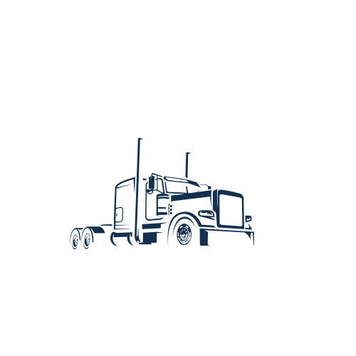

A practical, plain-English plan to turn the prototype into a real app your IGL & Massy crews can log into — what to use, what it costs, and the steps to launch.
A working, clickable prototype of the whole app — on a real phone screen.
The Nodrog Maintenance file is a high-fidelity prototype. It looks and behaves like the finished product: you can sign in as different staff, switch between the IGL and Massy fleets, run a weekly inspection, log a fault, flag a truck out of service, and adjust stock. It’s the fastest way to test the idea with your team and agree on exactly what you want before spending money on a backend.
Because you want a web app people install from a link (no app store), used by a small team, with separate IGL / Massy access and admin control, there are three sensible ways to get there:
| Route | Best when… | Effort | Ballpark cost |
|---|---|---|---|
| A · No-code Glide | You want something live this week and are happy to rebuild the screens by dragging blocks. Trades design control for speed. | Low | ≈ $25–$249 / mo tier depends on logins |
| B · This prototype + a backend RECOMMENDED React + Supabase | You want to keep this exact look & feel, get real logins, a shared database, photos and offline — at a small-team price. | Medium | $0 to start, ≈ $25 / mo in production |
| C · Full custom Hire a developer | This becomes business-critical, needs app-store apps, or deep integration with other Nodrog systems later. | High | One-off build fee + hosting |
Pair the prototype’s front-end with Supabase as the backend. Supabase is an “app database in a box”: it gives you a real database, user logins, file storage for photos, and security rules — all in one place, with a generous free tier.
Firebase (Google) is a fair alternative to Supabase. We suggest Supabase because its security rules map cleanly onto the IGL/Massy split and its pricing is more predictable for a small team.
These are the “tables” (think labelled spreadsheets) the app needs. They mirror your paper forms and the prototype exactly.
| Table | Holds |
|---|---|
| users | Name, email, role (mechanic / lead / admin), and which fleets they may see (IGL, Massy, or both). |
| trucks | Plate, fleet, model, chassis, capacity, segment, driver, location, odometer, idle hours, status, last-check date — plus cert expiries (insurance, fitness, MV reg, carrier licence, fire extinguisher). |
| service_records | Per truck: last miles & idle-hours and date for engine, transmission, air filter, front & rear diff, and the next-due miles / hours. |
| inspections | One weekly check: truck, date, who did it, an OK / needs-attention result and an optional note for every line on the sheet, plus general comments, missing items and photo/video attachments. Kept as history so admins can review previous weekly reports. |
| issues | Truck, title, detail, severity, status, photos & video, “serious” flag, “out of service” flag, and what’s needed to fix it. |
| parts | Name, SKU, quantity, minimum level, location, fleet (or shared). Admins create new items in-app. |
| part_usage | Which part, how many, fitted to which truck, when and by whom. |
| fleets | Id, short name, full name. Admins add fleets in-app; everything else references them. |
| invoices | Number, fleet, optional truck, party, type (payable/receivable), dates, status, line items (description × qty × unit price) and notes. Admin-created. |
You asked for separate IGL and Massy access, with lead mechanics and admins seeing both. Here’s the simple rule set to set up:
| Role | Can see | Can do |
|---|---|---|
| Admin (Nodrog) | All fleets | Everything — add fleets, trucks & staff, create invoices, add parts, edit any record, export reports. |
| Lead mechanic | All fleets | Run checks, log issues & video, take trucks out of service, adjust stock. |
| Mechanic — IGL | IGL only | Run checks & log issues on IGL trucks; view IGL stock. |
| Mechanic — Massy | Massy only | Same, for Massy trucks. |
In Supabase this is enforced by row-level security: each truck/issue/part/invoice row is tagged with its fleet, and a rule says “only return rows whose fleet is in this user’s allowed list.” It’s impossible for a Massy-only login to pull IGL data, even by accident — the database itself refuses. Admin and lead-mechanic accounts are given an all-fleets flag, so newly-created fleets appear for them automatically.
Logins are handled by Supabase Auth — you don’t build or store passwords yourself. The flow your crew sees (shown in the Login Flow mockup alongside this guide) is:
The crew taps the home-screen icon (or the shared web link). If they signed in before and chose “stay signed in”, they skip straight to the dashboard.
Each person has their own account (e.g. marlon@nodrog.com). First-time users get an invite email and set their own password; a 4-digit PIN/biometric can be added for fast re-entry on a shared yard phone.
On success Supabase issues a secure session token and returns only the data their role allows. Wrong password shows a clear error; “Forgot password” emails a reset link.
An IGL mechanic sees only IGL; an admin sees the fleet switcher and the admin tools (invoices, fleets, add-part).
From the Supabase dashboard (or an in-app admin screen later) you invite a user by email, pick their role and fleet(s), and they’re live. Deactivate someone the day they leave and their access ends immediately — no shared password to change. Because identity is per-person, every weekly check, issue and invoice is stamped with who did it.
A realistic order of operations. A comfortable-with-tech person can do 1–6; a developer (or an AI coding assistant) speeds up 4–5.
Sign up at supabase.com, create a project, and choose a region near Jamaica (US East). Note the project URL and API key.
Create the tables from section 4. Easiest start: import your existing spreadsheet, then tidy the columns. Add a fleet column to trucks, issues and parts.
Enable email logins (Supabase Auth), then invite each crew member with their role and allowed fleets. They set their own password from the invite email — see section 5 and the Login Flow mockup.
Add the row-level-security policies from section 5 so each login only sees what it should. Test by signing in as a Massy mechanic and confirming no IGL trucks appear.
Swap the prototype’s built-in sample data for live Supabase calls (read trucks, save a check, log an issue, upload a photo). The screens stay exactly as designed.
Deploy the app free to Vercel or Netlify. Send the crew the web link; each person opens it and taps Add to Home Screen.
The app is a Progressive Web App (PWA) — a website that installs like an app. To install: open the link in Safari (iPhone) or Chrome (Android), tap the share/menu button, then Add to Home Screen. It gets an icon, opens full-screen, and there’s nothing to approve in an app store.
We recommend enabling offline support so a mechanic in a low-signal garage can still open the app and complete a check; it syncs automatically when signal returns. This is a standard PWA feature worth turning on for Nodrog’s yards.
App-store apps mean Apple/Google review, yearly developer fees, and slower updates — overkill for an internal tool used by a handful of staff. A PWA gives you the “installed app” feel without any of that. (Route C can add store apps later if needed.)
The camera buttons on issues and weekly checks upload photos and short videos straight to Supabase Storage and attach to that record — handy for showing a supervisor the broken center bolt, or a clip of the gas leak while idling. Video files are larger, so set a sensible size cap and let them upload on Wi-Fi / return-to-signal if offline.
The Reports screen generates a weekly summary (checks, open issues, out-of-service trucks) and exports inventory and the fleet register to a spreadsheet or PDF. These run off the same live data, so they’re always current.
The dashboard already flags certs expiring within 30 days and trucks approaching their service miles/hours. To push these as phone notifications or a weekly email digest, add a small scheduled job in Supabase — a good “phase 2” enhancement.
For a team of 1–10, the recommended route is essentially free to start and inexpensive in production. Figures are indicative for mid-2026 — always check the providers’ current pricing pages.
| Item | Free to start? | In production |
|---|---|---|
| Supabase (database, logins, photos) | Yes free tier | ≈ $25 / mo (Pro) once live* |
| Vercel / Netlify (hosting the app) | Yes free tier | $0 for an internal app this size |
| Custom web address (optional) | — | ≈ $10–15 / year |
| Route B total: $0 while building & testing → about $25–30 / month once in daily production use. | ||
*The Supabase free tier pauses a project after ~7 days of no activity and has no automatic backups — fine for building and trials, but move to the $25/mo Pro plan before the crew relies on it daily, mainly for 24/7 uptime and daily backups.
Glide has a free tier for trying it out. For a real internal tool where staff sign in with company (work-domain) emails and you need role permissions, you’ll be on a paid plan — roughly $25–60/mo for personal-email logins, or the Business plan (~$199–249/mo, ~30 users included) if staff sign in with @nodrog work emails. Faster to stand up, but less design control and higher monthly cost at the level you need.